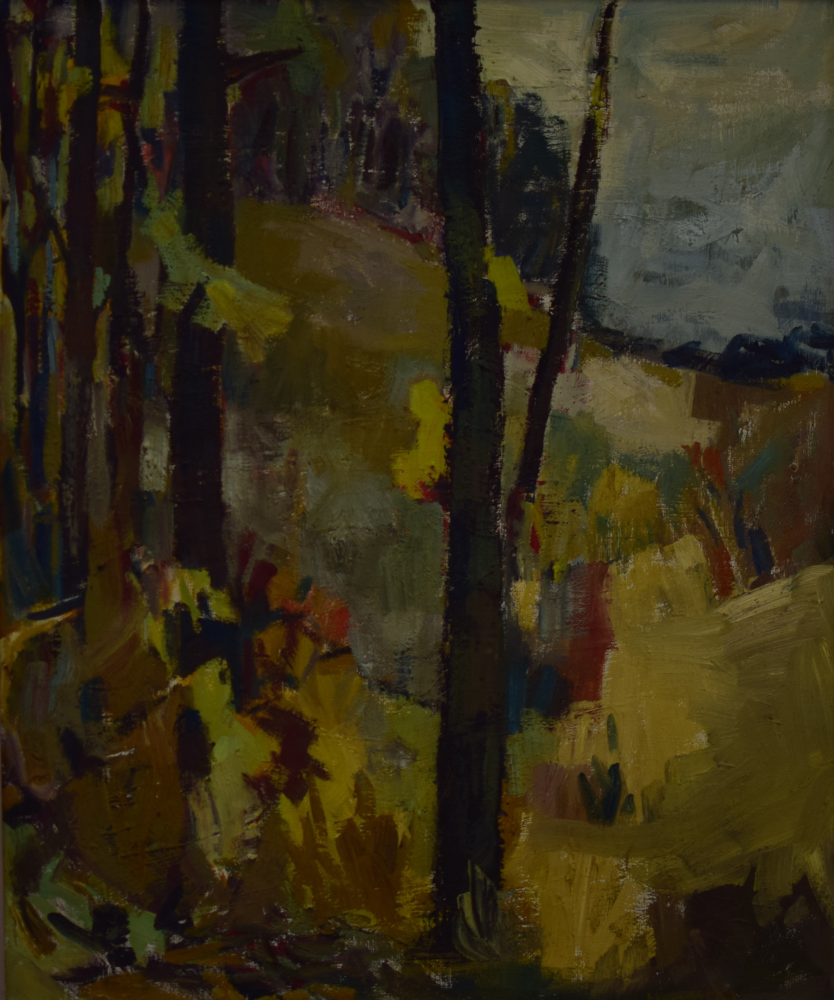
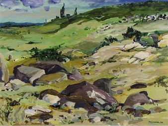

Fall Scene
Three Horses
Hillside
Wynona ("Nonie") Croft Mulcaster was born on April 10, 1915 in Prince Albert, Saskatchewan. She was interested in horses, an interest which showed in many of her early drawings.
Okema beach, Emma Lake, December 1939. Left to right: Nonie Mulcaster, Dr. Leslie Saunders, Bodil Lindner,Ernest Lindner, Edith Cook (?)
Like many Saskatchewan landscape artists Mulcaster studied under Ernie Lindner - motivated by (what else?) a desire to learn how to draw horses. In 1942 she obtained a BA in Art and English from the University of Saskatchewan. Further studies were conducted under the tutelage of Henry George Glyde and A.Y.Jackson at the Banff School of Fine Arts. and under Arthur Lismer at the Montreal Museum of the Arts and Design in 1947. She participated in the Emma Lake Artists' Workshops and got her Master of Fine Arts degree at the Instituto Allende in San Miguel, Mexico.
In the late 1930s Mulcaster helped establish what would later become the Emma Lake Artists' Workshops and attended it from 1937 until 1993. She taught art to school children between 1937 and 1943.
Mulcaster - formerly residing in San Miguel - died at the age of 101 on August 25, 2016.
|  |
|
 |
|
Fall Scene |
Three Horses |
Hillside |